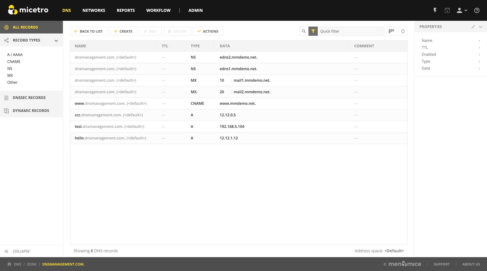
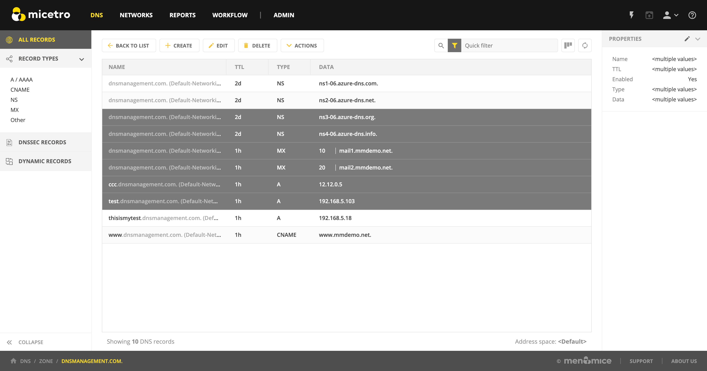
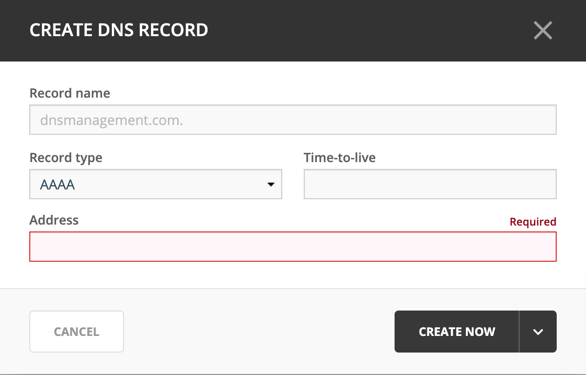

DNS resource records
Overview
Each zone contains DNS resource records that define how requests are processed or delegated by the zone. The Open action displays a streamlined interface that makes it easy to view, edit, and manipulate information within a zone.
{kind=link}
Types of Resource Records
There are varieties of resources records that actively affect zones, as well as several informational records that can be used to provide supporting data about a zone. The primary record types are described below.
- NS
The Name Server record is used to list a name server for this zone. NS records state the domain name of the zone’s name servers. The name of an NS record is the fully qualified domain name of a zone. Every zone must have at least one NS record with the same name as the zone itself.
Example:
Name
Type
Data
example.com.
NS
ns1.example.com.
- A
Also known as an Address record, an A record declares the IP Address of a domain name. Defines a Hostname-to-IP Address mapping, or a forward mapping.
Example
Name
Type
Data
example.com.
A
192.168.0.1
- PTR
Also known as Pointer records, PTR records define an IP Address-to-Hostname mapping, known as a reverse mapping. A properly configured reverse zone has one PTR record providing the reverse lookup for each IP Address. All reverse zones are traditionally part of the
.in-addr.arpa.zone. The proper formatting for a PTR record is the 4 octets of the IP Address in reverse order, followed by.in-addr.arpa.A properly formatted PTR record for the A record (above) is shown in the following example.In the event that you have multiple A records concerning the same IP Address, choose one for the PTR record. If one of the host names is used for a mail server, give that hostname preference because a common use of reverse lookup is to check the source of e-mail.
Example
Name
Type
Data
1.0.168.192.in-addr.arpa.
PTR
example.com.
- CNAME
Canonical Name records are used to define an alias. The canonical or primary DNS domain name used in the data is required and must resolve to a valid DNS domain name in the namespace. The name of the record is the name of the alias. Thus, if you want www.example.com to bring visitors to example.com, you’d need to add the line shown in following example:
Example
Name
Type
Data
www.example.com.
CNAME
example.com.
- MX
Also known as Mail Exchange records, MX records create mail routes. Each exchanger host must have a corresponding host (A) address resource record in a valid zone. The first field in the record data is the preference number; this is the order in which mail hosts will be used by an outside mail server trying to send mail to a domain. Mail hosts will be contacted from the lowest preference number and work up to higher preference number. If two MX records have the same preference number, they will be used in random order. Mail servers with the same preference number will not forward to each other, nor will they forward to a mail server with a higher preference number.
Example
Name
Type
Data
example.com.
MX
10 mail.example.com.
- AAAA
Maps a DNS domain name to an Internet Protocol (IP) version 6 128-bit address.
Example
Name
Type
Data
host.example.com.
AAAA
4321:0:1:2:3:4:567:89ab
- WKS
Similar in function to MX records, Well-Known Service (WKS) records describe the well-known IP services supported by a particular protocol on a specific IP Address. They provide TCP and UDP availability information for IP servers. Multiple WKS records should be used for servers that support both TCP and UDP for a well-known service or that have multiple IP Addresses that support a service.
Three fields of data are required: IP Address, protocol, and a service list.
Example
Name
Type
Data
host.example.com.
WKS
10.0.0.1 TCP (ftp smtp telnet)
Warning
Please note that the record type WKS was deprecated by RFC1123 - please don’t use this record type.
- RP
The Responsible Person record specifies the domain mailbox name for the person responsible for that domain. This name is then mapped to a domain name in for which (TXT) resource records exist in the same zone. When RP records are used in DNS queries, subsequent queries are used to retrieve associated text (TXT) resource record information. Two fields of data are required: the domain name you are searching, the domain where TXT resource records exist.
Example
Name
Type
Data
my.example.com.
RP
who.example.com txtrec.example.com
- AFSDB
The Andrew File System Database resource record maps a DNS domain name to the host name for a server computer of a server subtype. Two fields of data are required:
The first is a subtype, which can have one of two supported numeric values:
A 1 indicates that the server is an AFS version 3.0 volume location server for the named AFS cell.
A 2 indicates that the server is an authenticated name server holding the cell-root directory node for the server that uses either Open Software Foundation’s (OSF) DCE authenticated cell-naming system or HP/Apollo’s Network Computing Architecture (NCA).
The second field is the server’s host name.
Example
Name
Type
Data
abc.example.com.
AFSDB
1 afs-server.example.com.
- SRV
Service records are intended to provide information on available services. They allow multiple servers providing a similar TCP/IP-based service to be located using a single DNS query operation.
An SRV record has four fields and a special system for naming. The naming system is an underscore followed by the name of the service, followed by a period, an underscore, and then the protocol (generally TCP or UDP), another dot, and then the name of the domain. The four fields are:
- Priority
Used the same way as the preference number in MX records.
- Weight
This determines the relative capacity between SRV fields with the same priority. Hits will be assigned proportionately by weight, allowing a powerful and a weak server to share appropriate loads.
- Port
The port of the service offered.
- Hostname
The name of the domain.
Example
Name
Type
Data
_http._tcp.example.com.
SRV
10 5 80 www.example.com.
- HINFO
The Host information resource record specifies the type of CPU and operating system, respectively, for the host DNS domain name. This information is used by some application protocols, such as FTP, which use special procedures when communicating with computers of a known CPU and operating system type. Hardware information belongs in the first data field and OS information in the second field, as shown in the example below.
Example
Name
Type
Data
compname.example.com.
HINFO
Intel-PIII WIN2K
- TXT
A Text Record allows you to include up to 255 characters of free-form descriptive text in your zone file. The order of resource records in zone files is not preserved, so it is best to keep messages confined to one record.
Example
Name
Type
Data
random.example.com.
TXT
The quick brown fox jumped over the lazy dog.”
- LOC
Geographic Location Records provide exact altitude, latitude, and longitude information. There is not much in the way of a practical application for this record, though some industries may find it to be of limited value. The LOC record can accept as few as three or as many as six fields of data:
Degrees latitude in degrees, minutes, seconds, N or S
Degrees longitude in degrees, minutes, seconds, E or W
Altitude in meters. This is single value, you may add an M.
Size of machine in terms of an enclosing sphere in meters radius. Expressed as a number, or a number immediately followed by an M. (Optional.)
Horizontal precision of the data in meters, with or without an M. (Optional, not available if 4 is blank.)
Vertical precision of data in meters, with or without an M. (Optional, not available if 5 is blank.)
Note
The Microsoft DNS server does not support LOC records.
Example
Name
Type
Data
geo.example.com.
LOC
42 21 43.528 N 71 05 06.284 W 12m
- NAPTR
NAPTR stands for Naming Authority Pointer and is a resource record type that supports regular expression based rewriting. The NAPTR record accepts six fields of data:
- Preference
When there are multiple NAPTR records with the same name, the record with the lowest preference number is picked first.
- Weight (Order)
This field specifies the order in which the NAPTR records MUST be processed to accurately represent the ordered list of Rules. This field is only used when there is more than one record with the same preference
- Flags
This field contains flags to control aspects of the rewriting and interpretation of the fields in the record. Flags are single characters from the set A-Z and 0-9.
- Service
This field contains a character-string that specifies the Service Parameters applicable to this delegation path.
- Regexp
This field contains a character-string that contains a substitution expression that is applied to the original string held by the client in order to construct the next domain name to lookup.
- Replacement
This field contains a domain name, which is the next domain name to query for, depending on the potential values found in the flags field.
Example
Name
Type
Data
104
NAPTR
100 10 u sip+E2U !^.*$!sip:info@info.example.test!i .
- SSHFP
SSHFP stands for SSH Public Key Fingerprint. This resource record type is used for publishing SSH public host key fingerprints in the DNS System, in order to aid in verifying the authenticity of the host. The SSHFP record accepts 3 fields of data:
- Algorithm
Specifies the algorithm number to use.
- Fingerprint type
Specifies the fingerprint type to use.
- Fingerprint
The fingerprint for the record.
For further information on this record type, see RFC 4255.
Example
Name
Type
Data
random.example.com
SSHFP
1 1 23D3C516AAF4C8E867D0A2968B2EB999B3168216
- SPF
SPF stands for Sender Policy Framework. This record type is used in an e-mail validation system designed to prevent e-mail spam. The SPF record accepts a text string that contains the configuration info that should be used.
For further information on this record type, see RFC 4408.
Example
Name
Type
Data
example.com
SPF
v=spf1 a mx -all
- TLSA
The TLSA DNS record is used to associate a TLS server certificate with the domain name where the record resides.
For further information on this record type, see RFC 6698
A TLSA record has four fields, which are:
- Certificate usage
Specifies the association that will be used to match the certificate.
- Selector
Specifies which part of the TLS certificate will be matched against the certificate association data
- Matching type
Specifies how the certificate association is presented
- Certificate associate data
Specifies the certificate association data to be matched
Example
Name
Type
Data
example.com
TLSA
3 1 1 d2abde240d7cd3ee6b4b28c54df034b9 7983a1d16e8a410e4561cb106618e971
- CAA
The CAA (Certification Authority Authorization) DNS record is used to specify which Certification Authorities (CA) can issue certificates for the domain.
Example
Name
Type
Data
example.com
CAA
0 issue “letsencrypt.org”
In addition to the supported record types in the table, Micetro supports the following DNSSEC resource record types:
DNSKEY (read-only)
NSEC (read-only)
NSEC3 (read-only)
NSEC3PARAM
RRSIG (read-only)
DS
DLV (read only)
Note
All DNSSEC specific record types, with the exception of the DS and NSEC3PARAM record types, are read only.
It is beyond the scope of this documentation to discuss DNSSEC management so these record types are not explained in detail. For further information on these resource record types and DNSSEC in general, we recommend the DNS Extensions section on the IETF web site.
Resource Records
To select a single resource record, click on the gray square to the left of the record. This highlights the entire record.
Once a record is selected, you can perform various editing actions on it, such as deleting, cutting, or copying. These are discussed in more detail later in this section. Many editing action can be performed on multiple records simultaneously. Simply select the records you want to operate on and perform the editing action as usual.
To select non-consecutive records, do the following:
Hold down the Ctrl key and select each record as usual.
When you are done selecting records, release the Ctrl key.
To select a contiguous series of records, select the first record in the series as usual, then hold down the [Shift] key and select the last record in the series. All records in between will automatically be selected.
{kind=link}
New Records
If you are comfortable editing the record table directly, you can use this procedure to insert a new record directly in the zone tab.
Open the zone to display the resource records in the zone you want to edit.
In the grid, select the record that is directly above where you want to insert the new record.
Click on Create. A new, blank record is added.
Enter the Record Name.
Warning
If you enter a domain name that is not fully qualified (i.e., does not end in a trailing dot .), Micetro will assume that you are using a local name and will automatically append the name of the zone onto the end of the name, making it a fully qualified domain name. That means when adding the name server ns1 to the zone example.com, you should enter either just ns1 or ns1.example.com. If you leave off the trailing dot Micetro will interpret your intention as ns1.example.com.example.com. The information automatically filled in by the Web Application appears greyed out.
In the Type field select the appropriate type from the dropdown. The following types of resource records can be created: NS, A, PTR, CNAME, MX, AAAA, WKS, RP, SRV, TXT, and SPF.
Warning
If you enter the wrong record type, you will be unable to change it. You must delete the record, insert a new one, and re-enter the record information.
After selecting the type, the relevant fields are automatically displayed.
Fill in all apprioriate data fields.
Click Create now button to save the new record to the zone, or Add to request to add it to the request queue. (See Workflow Management for details on the request queue.)
Micetro will not allow you to save the changes until all required information is filled in and the data is validated. In case of errors or missing information, the relevant fields will highlight in red.
{kind=link}
Deleting Records
Deleting a record removes both the data and the physical record from the grid. Records beneath the deleted one are instantly moved up to fill in the space.
Select the record(s) that you want to delete. To select multiple records, hold down the Ctrl (or Cmd on Mac) key while making you selections.
Select Delete. The record is immediately deleted from the zone.
Clearing Records (Management Console)
When the whole record is selected, the Clear command works the same as the Delete Record command. The Clear command is really intended for deleting the contents of an individual field of data, leaving the rest of the record’s data intact.
In the Zone window, select the field (cell) whose contents you want to delete.
Right-click anywhere in the zone window and select Clear from the context menu. The data is removed from the field. (The cell is not removed, and the rest of the record is unaffected.)
Disable/Enable Records
You can disable a record without deleting it. The disabled record performs no function; however, it can be instantly enabled when its services are needed, without having to re-type the record.
Note
You cannot disable and enable records in dynamic zones.
How to Disable a Record
Select the record(s) that you want to disable. To select more than one record, hold down the Ctrl (Cmd on Mac) key while making your selections.
From the ellipsis menu select Disable DNS record or use .
Note
Disabled records are grayed out in the grid, and will show an Enable DNS record action instead.
In the confirmation dialog, click Save now to save the changes, or Add to request to add it to the request queue. (See Workflow Management for details on the request queue.)
Cut, Copy, and Paste (Management Console)
When working with records in the Management Console, there is no need to enter the same records in different zones. All records can be copied (or moved) to other zones simply by copying and pasting them between different zone windows.
To facilitate this, the Copy and Paste functions do not use fully qualified host names, so it is easy to work with records between zones.
This means that if you copy a record from the domain example.com, such as: www.example.com. CNAME example.com. and paste the record to sample.com, it displays as: www.sample.com. CNAME sample.com.
To cut, copy, and paste records, do the following:
Select the record(s) that you want to move or copy. To select multiple records, hold down the Ctrl key while making your selections.
Right-click anywhere in the Zone window and choose either Cut (to move the record) or Copy (to duplicate the record elsewhere) from the context menu.
Note
The Cut, Copy, Paste, and Clear commands can also be selected from the Edit menu in the main window.
Open the destination zone in which you want to insert the record(s).
In the destination zone, insert a new blank record in the location where you want to paste the records. To do this, right-click on the record immediately above where you want to paste the new one(s), then select Insert Record from the popup menu.
Select the blank record.
Right-click anywhere in the Zone window and choose Paste from the context menu. The new record(s) are pasted in the destination zone.The Management Console allows you to undo most editing actions, such as deleting, clearing, cutting, and pasting.
When you perform an editing action, the menu’s Undo command is modified to include that action. For example, if you disable a record, the Undo command changes to Undo Disable. Selecting this command will reverse the action and restore the previously deleted record. When you perform an Undo action, the Redo command becomes active. Selecting this command reverses the previous Undo action. If you perform multiple editing actions in a row, the Undo command can be used repeatedly to restore each prior action.
Undo/Redo Commands (Management Console)
The Management Console allows you to undo most editing actions, such as deleting, clearing, cutting, and pasting.
When you perform an editing action, the Edit menu’s Undo command is modified to include that action. For example, if you disable a record, the Undo command changes to Undo Disable. Selecting this command will reverse the action and restore the previously deleted record.
When you perform an Undo action, the Redo command becomes active. Selecting this command reverses the previous Undo action.
If you perform multiple editing actions in a row, the Undo command can be used repeatedly to restore each prior action.